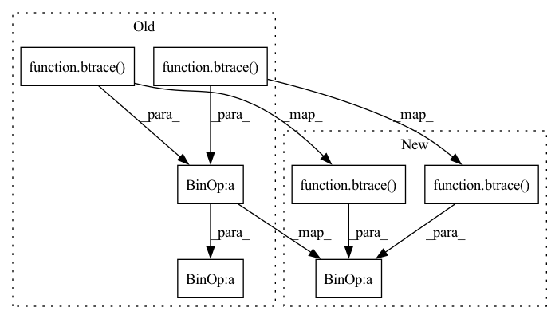

Pattern ID :15963
Before Change
det_prod = torch.det(Aup) * torch.det(Adown)
// kinetic terms
kinetic = -0.5 * (btrace( iAup@Bup) +
btrace( iAdown@Bdown) ) // * det_prod
// reshape
kinetic = kinetic.transpose(0, 1)After Change
det_prod = torch.det(Aup) * torch.det(Adown)
// kinetic terms
kinetic = (btrace( iAup@Bup) + btrace( iAdown@Bdown) )
// reshape
kinetic = kinetic.transpose(0, 1)In pattern: SUPERPATTERN
Frequency: 3
Non-data size: 7
Instances Fragment ID: 53816150
Project Name: nlesc-jcer/qmctorch
Commit Name: de77a1407c45ffd0cb0fe2315fa09b6078df0d7e
Time: 2020-08-18
Author: nicolas.gm.renaud@gmail.com
File Name: qmctorch/wavefunction/slater_pooling.py
M Class Name: SlaterPooling
N Class Name: SlaterPooling
M Method Name: kinetic_explicit(3)
N Method Name: kinetic_explicit(3)
M Parent Class: nn.Module
N Parent Class: nn.Module
M File Name: qmctorch/wavefunction/slater_pooling.py
N File Name: qmctorch/wavefunction/slater_pooling.py
M Start Line: 284
M End Line: 285
N Start Line: 284
N End Line: 284
Before Change
d2Aup = d2MO.index_select(1,self.index_up).index_select(2,cup)
d2Adown = d2MO.index_select(1,self.index_down).index_select(2,cdown)
pd = torch.det(Aup) * torch.det(Adown)
out[:,ic] = (btrace( iAup@d2Aup) + btrace( iAdown@d2Adown) ) * pd
// if not return_local_energy:
// pd = torch.det(Aup) * torch.det(Adown)After Change
d2Aup = d2MO.index_select(1,self.index_up).index_select(2,cup)
d2Adown = d2MO.index_select(1,self.index_down).index_select(2,cdown)
//pd = torch.det(Aup) * torch.det(Adown)
out[:,ic] = (btrace( iAup@d2Aup) + btrace( iAdown@d2Adown) ) //* pd
if not return_local_energy:
pd = torch.det(Aup) * torch.det(Adown) Fragment ID: 53816161
Project Name: nlesc-jcer/qmctorch
Commit Name: 648c665a87d32ca67d9c0d36b59099a47cf79c0f
Time: 2019-11-11
Author: nicolas.gm.renaud@gmail.com
File Name: deepqmc/wavefunction/kinetic_pooling.py
M Class Name: KineticPooling
N Class Name: KineticPooling
M Method Name: forward(4)
N Method Name: forward(4)
M Parent Class: nn.Module
N Parent Class: nn.Module
M File Name: deepqmc/wavefunction/kinetic_pooling.py
N File Name: deepqmc/wavefunction/kinetic_pooling.py
M Start Line: 87
M End Line: 88
N Start Line: 77
N End Line: 94
Before Change
iAdown = torch.inverse(Adown)
// product
out = (btrace( iAup@Bup) + btrace( iAdown@Bdown) )
// multiply by det if necessary
if not return_local_energy:
out *= torch.det(Aup) * torch.det(Adown)
return -0.5* out.transpose(0, 1)
def _forward_loop(self, MO, d2MO, dJdMO=None, d2JMO=None,
return_local_energy=False):After Change
det_prod = torch.det(Aup) * torch.det(Adown)
// kinetic terms
kinetic = -0.5*(btrace( iAup@Bup) + btrace( iAdown@Bdown) ) * det_prod
// reshape
kinetic = kinetic.transpose(0, 1) Fragment ID: 53816157
Project Name: nlesc-jcer/qmctorch
Commit Name: 766622eb745e8710b6250e74ae32ceaeb7dd2196
Time: 2020-01-03
Author: nicolas.gm.renaud@gmail.com
File Name: deepqmc/wavefunction/kinetic_pooling.py
M Class Name: KineticPooling
N Class Name: KineticPooling
M Method Name: forward(5)
N Method Name: forward(6)
M Parent Class: nn.Module
N Parent Class: nn.Module
M File Name: deepqmc/wavefunction/kinetic_pooling.py
N File Name: deepqmc/wavefunction/kinetic_pooling.py
M Start Line: 38
M End Line: 80
N Start Line: 73
N End Line: 82